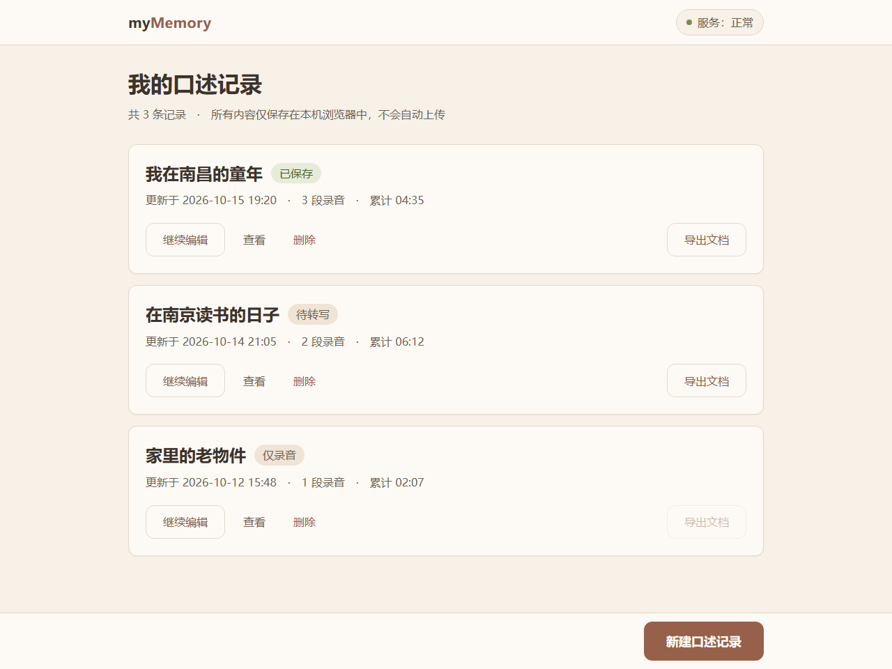
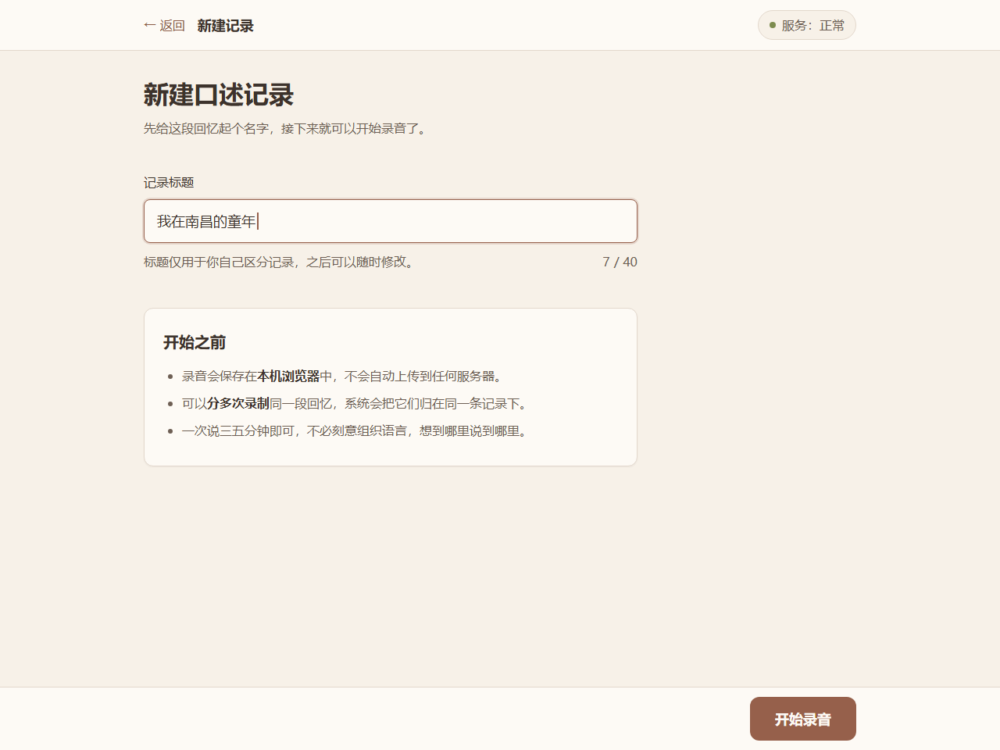
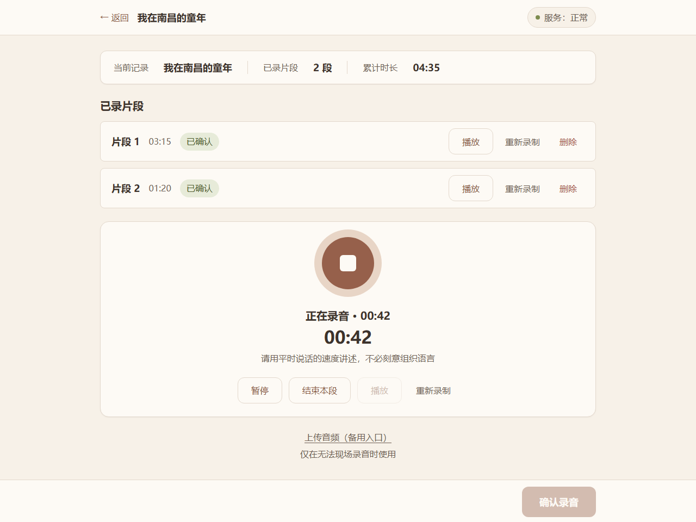
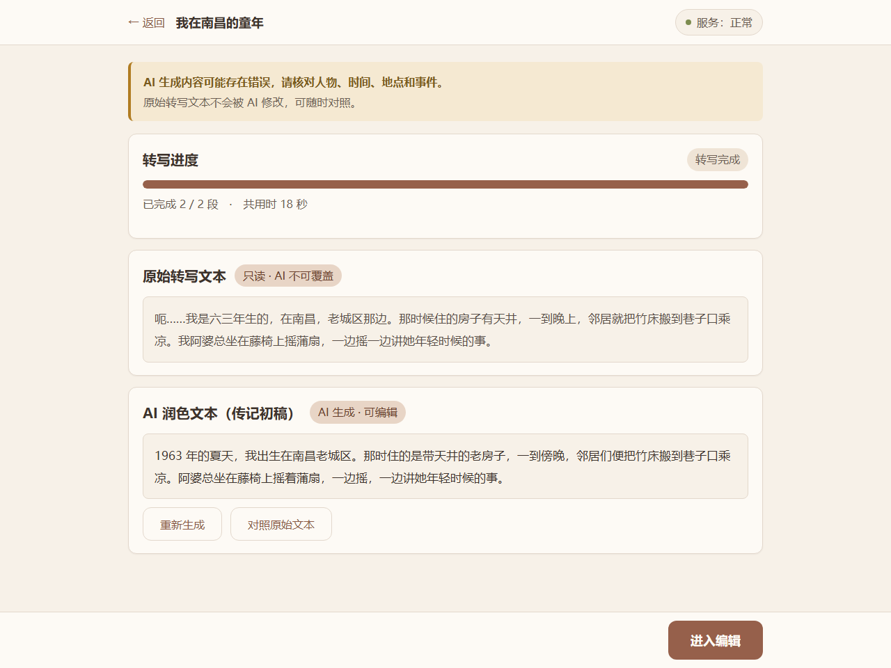
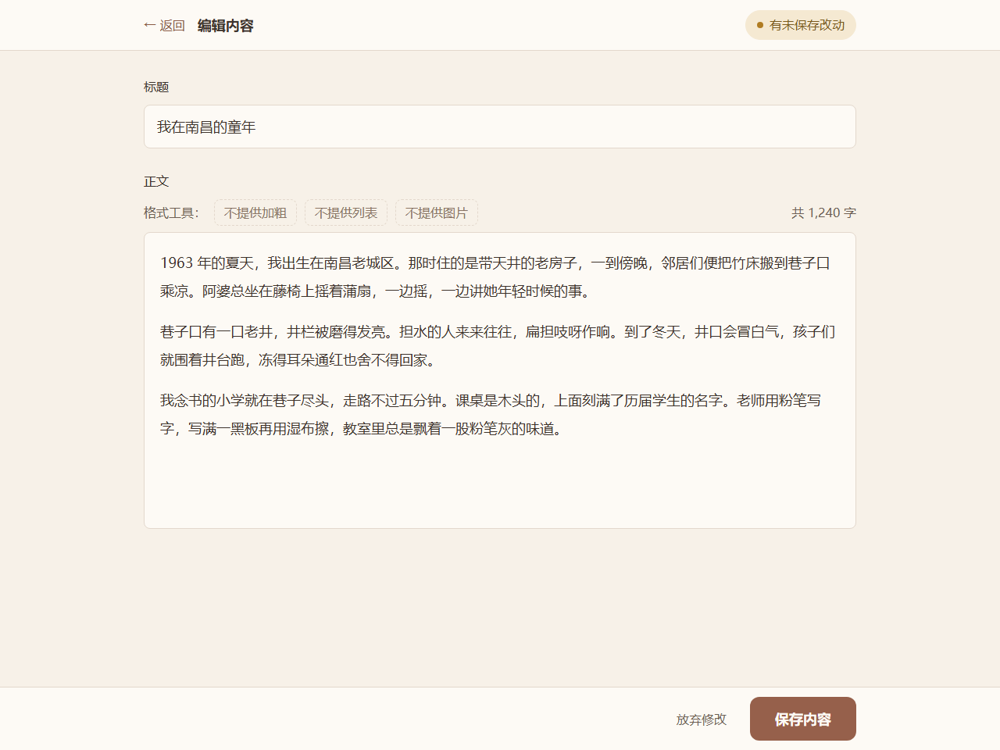
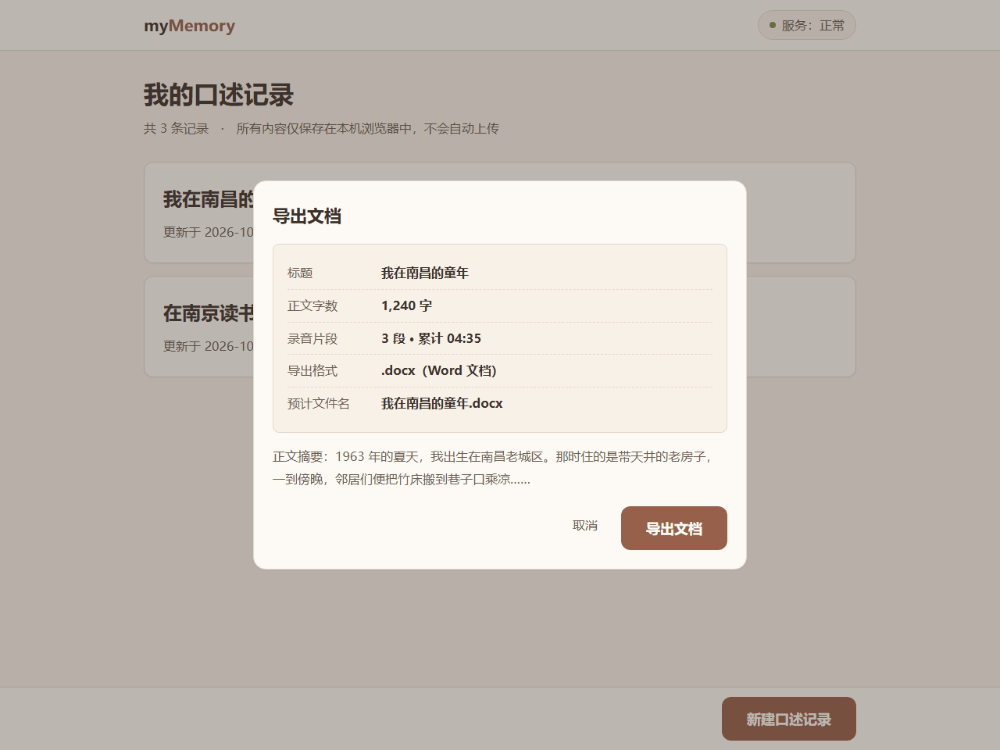

本文档是 myMemory 前端开发的唯一视觉与交互基准。所有页面、组件与交互动作都必须严格对齐本规范；实现过程中若发现规范未覆盖的情况，应先补充规范再实现，不得各自即兴决定。
本规范在 v1.0 的基础上做了两处实质性补充：排版栅格由原先只有字号与间距，扩展为完整的列栅格与断点体系；交互动作由原先零散的约束，扩展为按钮、表单、弹窗、错误提示四类交互的完整定义。同时修正了 v1.0 中主按钮对比度标注有误的问题（见 2.6）。
本规范按 UI 设计规范的四件套组织，四部分互相独立又彼此约束：
| 件套 | 章节 | 解决什么问题 |
|---|---|---|
| 统一配色方案 | 第 2 章 | 颜色不再靠即兴挑选，任何颜色都有唯一来源与十六进制取值 |
| 统一组件样式 | 第 3 章 | 同一个组件在任何页面长得一样，尺寸与层级固定 |
| 统一排版与栅格 | 第 4 章 | 字号、间距、栏宽与页面骨架统一，多页面观感一致 |
| 统一交互动作 | 第 5 章 | 悬停、聚焦、提交、报错、弹窗的行为与反馈统一 |
| 文档 | 关系 |
|---|---|
| 技术方案与页面原型规划（人工修改稿） | 上游依据，本规范的尺寸与交互约束均源于其 8.2、8.3、9.1–9.8 节 |
| 后端模块划分清单 / 标准化 API 接口文档 | 同批交付物。接口返回的错误码文案直接进入本规范 5.6 的错误提示体系 |
| 业务边界清单（人工修改版） | 范围基线，本规范不得为「明确不做」的功能设计界面 |
| 本规范（UI 设计规范 v2.0） | 前端编码、联调与验收的唯一执行依据 |
全站配色统一采用低饱和度暖色系，由米白、奶油、浅驼、暖木、淡陶土等色构成，营造温馨柔和的视觉氛围。背景、卡片、按钮、文字、边框全部取自同一暖色体系，保持整体协调。
配色禁令：禁止使用大红、大紫等高饱和鲜艳色；禁止夸张渐变、霓虹色与强对比撞色。所有语义色同样以低饱和暖色表达，不引入冷色。
| Token | 色值 | 色相描述 | 用途 |
|---|---|---|---|
--color-primary | #96604B | 暖木色 | 主按钮底色、进度条填充、选中态指示 |
--color-primary-hover | #8A5A45 | 暖木色加深 | 主按钮悬停 |
--color-primary-active | #7A4B3B | 暖木色更深 | 主按钮按下 |
--color-primary-soft | #E8D5C6 | 淡陶土色 | 选中背景、浅色强调块、录制中呼吸圈 |
--color-accent | #B4785A | 暖木色（浅） | 仅用于非文字元素：录音呼吸圈、装饰性描边、进度条轨道。严禁作为文字底色 |
| Token | 色值 | 用途 |
|---|---|---|
--color-text | #3D332C | 正文与标题（暖褐黑） |
--color-text-muted | #6E5F54 | 辅助说明、次要信息（暖灰褐） |
--color-border | #E3D8CC | 分割线、输入框边框（浅驼） |
--color-bg | #FDFAF5 | 卡片与内容区背景（奶油白） |
--color-bg-subtle | #F7F1E8 | 页面背景（米白） |
--color-bg-hover | #EFE4D6 | 次按钮与列表项悬停底（浅驼） |
语义色分两种用法：作为图形色（状态圆点、图标描边）使用时取「图形值」；作为标签使用时一律采用「浅底 + 深字」组合，不使用「深底 + 白字」，以保证对比度。
| 语义 | 图形色 | 标签底色 | 标签文字色 | 使用场景 |
|---|---|---|---|---|
| 成功 | #7D8C4F | #E7EBD9 | #4F5C2C | 保存成功、转写成功、已保存 |
| 警告 | #B07C22 | #F5E9D2 | #7A5A1E | 存储不足、未保存提醒 |
| 危险 | #A85A4D | #F4DDD8 | #8F4438 | 删除、重录、错误提示 |
| 中性 | #6E5F54 | #EFE4D6 | #6E5F54 | 待转写、仅录音等中间状态 |
危险操作按钮的底色使用 #A85A4D（与危险图形色一致），悬停加深为 #9C4F42，按下为 #8F4438。
| Token | 色值 | 用途 |
|---|---|---|
--color-link | #8A5A45 | 文字链接（与主色同族加深） |
--color-link-hover | #7A4E3C | 链接悬停 |
--color-focus | #96604B | 键盘聚焦轮廓（2px 外发光，偏移 2px） |
以下数值按 WCAG 2.1 相对亮度公式计算。正文与说明文字要求不低于 4.5:1；图形与控件边界要求不低于 3:1。
| 前景 | 背景 | 实测对比度 | 要求 | 用途 | 结论 |
|---|---|---|---|---|---|
#3D332C | #FDFAF5 | 11.81:1 | ≥4.5:1 | 正文、标题 / 卡片底 | 通过 |
#3D332C | #F7F1E8 | 10.95:1 | ≥4.5:1 | 正文 / 页面底 | 通过 |
#3D332C | #EFE4D6 | 9.80:1 | ≥4.5:1 | 正文 / 悬停底 | 通过 |
#3D332C | #E8D5C6 | 8.64:1 | ≥4.5:1 | 正文 / 淡陶土强调块 | 通过 |
#6E5F54 | #FDFAF5 | 5.88:1 | ≥4.5:1 | 辅助说明 / 卡片底 | 通过 |
#6E5F54 | #F7F1E8 | 5.46:1 | ≥4.5:1 | 辅助说明 / 页面底 | 通过 |
#6E5F54 | #EFE4D6 | 4.88:1 | ≥4.5:1 | 辅助说明 / 悬停底 | 通过 |
#FDFAF5 | #96604B | 4.95:1 | ≥4.5:1 | 主按钮文字 / 主按钮底 | 通过 |
#FDFAF5 | #8A5A45 | 5.56:1 | ≥4.5:1 | 主按钮文字 / 悬停底 | 通过 |
#FDFAF5 | #A85A4D | 4.76:1 | ≥4.5:1 | 危险按钮文字 / 底色 | 通过 |
#8A5A45 | #FDFAF5 | 5.56:1 | ≥4.5:1 | 链接 / 卡片底 | 通过 |
#8A5A45 | #EFE4D6 | 4.61:1 | ≥4.5:1 | 链接 / 悬停底 | 通过 |
#4F5C2C | #E7EBD9 | 5.96:1 | ≥4.5:1 | 成功标签文字 / 标签底 | 通过 |
#7A5A1E | #F5E9D2 | 5.28:1 | ≥4.5:1 | 警告标签文字 / 标签底 | 通过 |
#8F4438 | #F4DDD8 | 5.30:1 | ≥4.5:1 | 危险标签文字 / 标签底 | 通过 |
#7D8C4F | #FDFAF5 | 3.52:1 | ≥3:1 | 成功图形（圆点、图标） | 通过 |
#B07C22 | #FDFAF5 | 3.51:1 | ≥3:1 | 警告图形（圆点、图标） | 通过 |
#A85A4D | #FDFAF5 | 4.76:1 | ≥3:1 | 危险图形（圆点、图标） | 通过 |
#B4785A 配白字约 4.6:1」，经实测该组合仅为 3.49:1，未达到正文 4.5:1 的要求。v2.0 将主按钮底色加深为 #96604B（实测 4.95:1），原 #B4785A 降级为 --color-accent，仅用于不承载文字的装饰元素。--color-primary）的实心面积占比不超过 10%，避免大面积深色块造成压迫感。--color-bg-subtle，卡片与内容区统一为 --color-bg，不得混用。| 类型 | 底色 / 文字色 | 高度 | 圆角 | 使用场景 |
|---|---|---|---|---|
| 主按钮 Primary | #96604B / #FDFAF5，18px 600 | 56px | 12px | 每页仅一个：开始录音、保存内容、导出文档、新建记录 |
| 次按钮 Secondary | #FDFAF5 底 / #8A5A45 字，1px #E3D8CC 边框 | 48px | 12px | 暂停、继续、播放、进入编辑、上传音频 |
| 文字按钮 Text | 无底色 / #6E5F54 字 | 48px | — | 删除、取消、返回、查看等低频操作 |
| 危险按钮 Danger | #A85A4D / #FDFAF5 | 48px | 12px | 仅出现在二次确认弹窗内 |
录音是本产品的核心动作，单独定义规格。圆钮直径 96px，底色 #96604B，外圈为 12px 的 #E8D5C6 环。
| 状态 | 外观 | 文案 | 可用的次级操作 |
|---|---|---|---|
| 未开始 | 96px 实心圆钮，居中 | 开始录音 | 上传音频 |
| 录音中 | 圆钮变为停止图标，外圈 3 秒呼吸动效；实时显示时长 | 正在录音 · 00:42 | 暂停、结束本段 |
| 已暂停 | 圆钮恢复实心主色 | 已暂停 | 继续、结束本段、重新录制 |
| 已结束待确认 | 圆钮隐藏，改为两个动作按钮 | 录音时长 03:15 | 重新录制（文字按钮）、确认录音（主按钮） |
| 失败 | 圆钮置灰（#E3D8CC） | 录音失败，请检查麦克风后重试 | 重试、上传音频 |
#E3D8CC，圆角 8px，文字 18px。#96604B，并加 2px #96604B 外发光（偏移 2px）。#A85A4D，不使用边框变色作为唯一提示。#FDFAF5、12px 圆角、单档投影、内边距 24px；卡片内自上而下固定为「标题 → 更新时间与录音段数 → 状态标签 → 次级操作行」。#6E5F54。#A85A4D。#EFE4D6，行高不低于 56px，单元格内边距 16px，斑马纹使用 #FDFAF5 与 #F7F1E8 交替。标签为胶囊形，内边距 4px 12px，字号 16px，采用 2.4 中定义的「浅底 + 深字」组合：已保存（成功）、待转写（中性）、仅录音（中性）、转写失败（危险）、存储不足（警告）。
| 类型 | 样式 | 使用场景 |
|---|---|---|
| 行内提示 | 16px 正文 + 左侧 4px 语义色竖条，底色为对应标签底色 | 页面内的持续状态，如「正在录音」 |
| Toast | 顶部居中，底色 #EFE4D6，2.5 秒自动消失，含文字 | 保存成功、记录已删除、记录已创建 |
| 错误块 | 暖调警示底色 + 「原因 + 下一步动作」两行 + 重试入口 | 转写失败、AI 生成失败、存储不足、导出失败 |
| 确认弹窗 | 16px 圆角，标题 + 说明 + 两个按钮，主按钮在右下 | 删除记录、放弃未保存内容、重新录制 |
所有面向用户的提示文案统一遵循「原因 + 下一步动作」句式。
#6E5F54）→ 按钮区（右下对齐）。0 1px 2px rgba(61,51,44,.06)，层级靠遮罩与边框表达，不使用多层阴影。统一为「一句话说明 + 一个主操作」：不使用插画，文案如「还没有口述记录，可以先创建一条记录」，下方直接给出「新建口述记录」主按钮。
列表与详情加载统一使用骨架块（底色 #EFE4D6，圆角 6px），不使用转圈动画；同时给出文字「正在加载…」。
-apple-system, "Microsoft YaHei", "PingFang SC", sans-serif。font-variant-numeric: tabular-nums 保持等宽，避免时长跳动。字号下限为 16px，页面中不允许出现小于 16px 的文字。
| Token | 字号 / 行高 | 字重 | 用途 |
|---|---|---|---|
--text-display | 32px / 1.4 | 700 | 页面主标题 |
--text-title | 24px / 1.5 | 700 | 区块标题、记录标题 |
--text-subtitle | 20px / 1.6 | 600 | 次级标题、卡片标题 |
--text-button | 18px / 1.5 | 600 | 主按钮文字 |
--text-body | 18px / 1.8 | 400 | 正文、编辑区 |
--text-label | 16px / 1.6 | 500 | 标签、次按钮与文字按钮 |
--text-caption | 16px / 1.6 | 400 | 辅助说明（不低于 16px） |
所有间距取 8px 的整数倍，不允许出现 5px、10px 一类非体系值。
| Token | 数值 | 用途 |
|---|---|---|
--space-1 | 8px | 行内元素间隔、图标与文字间距 |
--space-2 | 16px | 段落间隔、卡片之间的间距 |
--space-3 | 24px | 区块间距、卡片内边距、页面左右内边距 |
--space-4 | 32px | 章节间距、内容区上下内边距 |
--space-5 | 48px | 大区块分隔、底部动作区留白 |
采用 12 列栅格，列间距（gutter）固定 24px，内容区最大宽度 960px：单列宽 58px，12 列合计 960px。
| 断点 | 列数 | 内容区宽度 | 页面左右内边距 | 行为 |
|---|---|---|---|---|
| ≥ 1024px | 12 列 | 960px，居中 | 24px | 标准布局，左右留白 |
| 768px – 1023px | 8 列 | 自适应 | 16px | 栅格降为 8 列，跨列比例等比缩放 |
| < 768px | — | — | — | 不承诺支持：页面显示「请使用电脑浏览器打开以获得完整功能」 |
| 场景 | 跨列 | 实际宽度（≥1024px） |
|---|---|---|
| 记录卡片列表（单列排布） | 跨 12 列 | 960px |
| 表单与输入区 | 跨 8 列 | 632px |
| 左右分栏对照（P4 原文 / 润色） | 各跨 6 列 | 各 468px |
| 确认弹窗 | 跨 8 列 | 632px |
| 窄屏（768–1023px）下的左右分栏 | 改为上下堆叠 | 各占 8 列全宽 |
| 区域 | 规格 | 说明 |
|---|---|---|
| 顶部栏 | 高 64px，底色 #FDFAF5，底部 1px #E3D8CC 分割线 | 左侧返回入口，中间当前记录标题（18px / 600），右侧服务状态标签 |
| 内容区 | 最大宽 960px 居中，左右内边距 24px，上下内边距 32px | 所有页面统一 |
| 底部动作区 | 高 80px，底色 #FDFAF5，顶部 1px 分割线，含唯一主按钮 | 随内容滚动；页面内容不足一屏时吸附在底部 |
主按钮位置约定：主线流程页面（P1–P5）的主按钮固定在底部动作区，保证始终可见；弹窗类页面（P6 导出确认）的主按钮位于弹窗底部右侧；任何情况下主按钮都不得出现在页面中部的内容流中。
| Token | 数值 | 用途 |
|---|---|---|
--radius-sm | 8px | 输入框、文本域、小色块 |
--radius-md | 12px | 按钮、卡片、提示块 |
--radius-lg | 16px | 弹窗、设备框 |
--shadow-card | 0 1px 2px rgba(61,51,44,.06) | 卡片与弹窗投影 |
| 状态 | 主按钮 | 次按钮 | 文字按钮 | 危险按钮 |
|---|---|---|---|---|
| 默认 | 底 #96604B，字 #FDFAF5 | 底 #FDFAF5，字 #8A5A45，边框 1px #E3D8CC | 无底，字 #6E5F54 | 底 #A85A4D，字 #FDFAF5 |
| 悬停 | 底 #8A5A45 | 底 #EFE4D6 | 字 #8A5A45，加下划线 | 底 #9C4F42 |
| 按下 | 底 #7A4B3B | 底 #E3D8CC | 字 #7A4B3B | 底 #8F4438 |
| 聚焦 | 2px #96604B 外发光，偏移 2px；键盘与鼠标聚焦表现一致 | |||
| 禁用 | 不透明度 40%，光标为默认箭头，并保留一行说明文字解释禁用原因 | |||
| 加载中 | 按钮文字替换为「处理中…」，宽度不变，禁止重复点击，不显示转圈 | |||
| 环节 | 交互表现 | 反馈文案 |
|---|---|---|
| 获得焦点 | 边框变 #96604B + 2px 外发光 | 无额外文案 |
| 失焦且内容有效 | 边框恢复 #E3D8CC | 无 |
| 失焦且内容无效 | 边框变 #A85A4D，下方显示 16px 错误文字 | 「请先填写记录标题」 |
| 输入过程中 | 错误文字随输入实时重算，校验通过即消失 | — |
| 输入超限 | 实时显示计数；达到上限后阻止继续输入 | 「2 / 40」 |
| 提交中 | 主按钮进入加载态，全部输入项置为只读 | 「处理中…」 |
| 提交成功 | 顶部 Toast，2.5 秒后自动消失 | 「记录已创建，接下来可以开始录音」 |
| 提交失败 | 错误块，保留用户已填写的内容 | 「记录创建失败：本地存储空间不足，请清理部分旧记录后重试」 |
| 交互 | 表现 |
|---|---|
| 悬停记录卡片 | 底色由 #FDFAF5 变为 #EFE4D6，过渡 150ms |
| 点击卡片主体 | 进入该记录的编辑页，与点击「继续编辑」等价 |
| 悬停次级按钮 | 按 5.2 的按钮交互执行，不额外放大 |
| 点击删除 | 弹出二次确认弹窗，弹窗关闭后焦点回到删除按钮 |
| 列表为空 | 按 3.8 空态规范呈现，主操作直接可点 |
| 环节 | 表现 |
|---|---|
| 打开 | 遮罩 rgba(61,51,44,.34) 淡入 120ms；弹窗透明度 0→1 且上移 8px→0，共 150ms |
| 关闭 | 反向播放，120ms |
| 动画曲线 | cubic-bezier(.2,.8,.2,1)，不使用回弹效果 |
| 焦点管理 | 打开后焦点移入弹窗内第一个可聚焦元素；关闭后焦点返回触发元素 |
| 遮罩点击 | 提示类弹窗可点击遮罩关闭；确认类弹窗（删除、重录、放弃未保存）必须显式选择，点击遮罩不关闭 |
| Esc 键 | 与点击「取消」等价 |
错误提示的形式由「错误发生的位置」与「是否可原地重试」共同决定：
| 类型 | 出现方式 | 消失方式 | 典型用例 |
|---|---|---|---|
| 行内错误 | 输入框下方 16px 文字，颜色 #A85A4D | 校验通过即消失 | 标题为空 |
| 错误块 | 在出错区域原位替换内容，含原因、下一步动作与重试按钮 | 用户重试成功或离开页面 | 转写失败、AI 生成失败、导出失败 |
| Toast | 顶部居中，底色 #EFE4D6 | 2.5 秒自动消失 | 保存成功、记录已删除 |
| 确认弹窗 | 模态弹窗，遮罩不可点击关闭 | 用户显式选择 | 删除记录、重新录制、放弃未保存内容 |
错误块中的文案与操作按后端返回的错误码一一对应，可重试的错误码其错误块必须带「重试」按钮：
| 错误码类别 | 错误块标题 | 下一步动作入口 |
|---|---|---|
| MYM_1xxx 输入与素材校验 | 素材不合规 | 重新录制 / 重新选择文件（无重试按钮） |
| MYM_2xxx 语音转写 | 转写失败 | 重试（音频已保存在本地） |
| MYM_3xxx AI 生成 | 初稿生成失败 | 重试（原始转写文本已保留） |
| MYM_4xxx 文档导出 | 导出失败 | 重试（编辑内容未受影响） |
| MYM_5xxx 服务与通用 | 服务暂时不可用 | 重试 / 进入本地模式继续录音与编辑 |
| 动效 | 时长 | 曲线 | 用途 |
|---|---|---|---|
| 按钮颜色过渡 | 120ms | ease-out | 主按钮 / 次按钮悬停与按下 |
| 卡片底色过渡 | 150ms | ease-out | 记录卡片悬停 |
| 弹窗淡入并上移 | 150ms | cubic-bezier(.2,.8,.2,1) | 弹窗打开与关闭 |
| Toast 进入 / 退出 | 150ms / 120ms | ease-out | Toast 出现与消失 |
| 录音呼吸圈 | 3s 循环 | ease-in-out | 录音中（全站唯一循环动效） |
本项目共 6 个页面。下表给出它们与业务要求中 4 个业务页面的对应关系 —— 6 屏是同一批业务页面的更细颗粒度拆分，未新增任何业务页面。
| 业务页面 | 本项目页面 | 拆分理由 |
|---|---|---|
| 项目列表页 | P1 首页 / 记录列表 | 1:1 对应 |
| 素材录入页 | P2 新建记录 + P3 录音页 | 拆为两屏：先为这段回忆命名，再进入录音，避免在同一屏内同时承担命名与录音两件事 |
| AI 生成编辑页 | P4 转写与初稿页 + P5 在线编辑页 | 拆为两屏：把「生成」与「编辑」分开，生成失败时不干扰已编辑的内容 |
| 文档导出页 | P6 导出确认 | 1:1 对应（以弹窗呈现） |
| 编号 | 页面 | 主要操作 | 优先级 |
|---|---|---|---|
| P1 | 首页 / 记录列表 | 新建口述记录 | P0 |
| P2 | 新建记录 | 开始录音 | P0 |
| P3 | 录音页 | 开始录音 / 确认录音 | P0 |
| P4 | 转写与初稿页 | 开始转写 / 生成初稿 | P0 |
| P5 | 在线编辑页 | 保存内容 | P0 |
| P6 | 导出确认 | 导出文档 | P0 |
| 状态 | 出现位置 | 呈现形式 | 文案 |
|---|---|---|---|
| 服务不可用（后端未启动） | 顶部栏 + P4 | 顶部栏显示「本地模式」标签；P4 禁用转写与生成按钮 | 当前为本地模式，录音、编辑与导出可正常使用 |
| 加载中 | 所有列表与详情 | 骨架块（不使用转圈） | 正在加载… |
| 空数据 | P1 列表 | 按 3.8 空态规范 | 还没有口述记录，可以先创建一条记录 |
| 页面 | 主要状态 | 错误态 | 文案要点 |
|---|---|---|---|
| P1 记录列表 | 正常 / 空 / 加载 | 本地存储读取失败 | 读取本地数据失败，请刷新页面重试 |
| P2 新建记录 | 正常 / 标题为空 | 创建失败 | 标题为空时提示「请先填写记录标题」 |
| P3 录音页 | 未开始 / 录音中 / 已暂停 / 待确认 / 已确认 | 麦克风未授权、录音中断、存储不足 | 见 3.2 录音按钮状态表 |
| P4 转写与初稿 | 未转写 / 转写中 / 转写完成 / 润色中 / 润色完成 | 转写失败、结果为空、AI 生成失败 | 保留原文与音频，提供重试入口 |
| P5 在线编辑 | 编辑中 / 有未保存改动 / 已保存 | 保存失败 | 保存失败，请稍后重试 |
| P6 导出确认 | 校验中 / 生成中 / 完成 | 标题为空、正文为空、存在未保存改动、导出失败 | 正在生成文档，请稍候 / 文档已导出，请在下载目录中查看 |
本项目面向中老年用户，以下四项为硬性要求，任何页面都不得违反：
| 要求 | 本规范的落实 | 出处 |
|---|---|---|
| 字号偏大 | 正文 18px，字号下限 16px，标题 20–32px | 4.2 |
| 按钮尺寸大 | 点击区最小 48px，主按钮 56px，录音圆钮 96px | 3.1 / 3.2 |
| 颜色对比度高 | 正文 11.81:1，主按钮 4.95:1，全部组合均 ≥4.5:1（图形 ≥3:1） | 2.6 |
| 去除花哨动画 | 单次动效 ≤200ms，全站仅 1 处循环动效，且可被系统设置关闭 | 5.8 |
| 操作极简 | 每页唯一主按钮，单页主流程步数不超过 3 步 | 5.1 / 6.3 |
| 提示通俗易懂 | 统一「原因 + 下一步动作」句式，不使用技术术语 | 3.6 |
以下各项为交付前必须逐条确认的检查项：
| 编号 | 检查项 | 判据 |
|---|---|---|
| A1 | 点击区尺寸 | 所有可点击控件有效高度 ≥48px；录音圆钮直径 96px |
| A2 | 字号下限 | 页面中不存在小于 16px 的文字 |
| A3 | 颜色对比度 | 文字与背景对比度 ≥4.5:1；图形与控件边界 ≥3:1 |
| A4 | 状态文字化 | 录音中、转写中、保存中、失败四类状态均有文字，不依赖颜色 |
| A5 | 主按钮唯一 | 每页主按钮数量 ≤1 |
| A6 | 错误句式 | 所有错误信息均包含原因与下一步动作 |
| A7 | 危险操作确认 | 删除、重录、放弃未保存内容均有二次确认弹窗 |
| A8 | 键盘可达 | 所有操作可通过 Tab 聚焦，聚焦态有可见轮廓 |
| A9 | 焦点不丢失 | 弹窗关闭后焦点回到触发元素 |
| A10 | 不依赖动画 | 关闭动画后功能与状态提示不受影响 |
| A11 | 不依赖颜色单独表意 | 状态标签同时具备文字，语义色不单独承载信息 |
| A12 | 文字可放大 | 浏览器缩放至 200% 时布局不破版、不遮挡 |
本附录给出 6 个页面的高保真视觉示意，用于直观呈现第 2–5 章定义的四件套（配色 / 组件 / 排版栅格 / 交互动作）在真实页面上的落地效果，可视为四件套的执行样板。
示意稿仅用于视觉参考，不具备功能（不含数据逻辑与接口调用）。实际开发以本规范正文为准；若示意稿与正文出现不一致，以正文为准，并应即时修正示意稿。
示意的源文件随本交付物一并提供：hifi-P1-记录列表.html 至 hifi-P6-导出确认.html（单文件、零外部依赖，可直接双击打开查看），同名 .png 即下方插图的原始图片。全部示意数据均为虚构，不含任何真实音频或个人内容。
| 编号 | 页面 | 对应业务页面 | 主要操作 | 示意源文件 |
|---|---|---|---|---|
| P1 | 首页 / 记录列表 | 项目列表页 | 新建口述记录 | hifi-P1-记录列表.html |
| P2 | 新建记录 | 素材录入页 | 开始录音 | hifi-P2-新建记录.html |
| P3 | 录音页 | 素材录入页 | 开始录音 / 确认录音 | hifi-P3-录音页.html |
| P4 | 转写与初稿页 | AI 生成编辑页 | 开始转写 / 生成初稿 | hifi-P4-转写与初稿.html |
| P5 | 在线编辑页 | AI 生成编辑页 | 保存内容 | hifi-P5-在线编辑.html |
| P6 | 导出确认 | 文档导出页 | 导出文档 | hifi-P6-导出确认.html |
页面骨架为「顶部栏 64px + 内容区 960px 居中 + 底部动作区 80px」。记录卡片采用 12px 圆角、单档投影与 24px 内边距；状态标签使用 2.4 节的「浅底 + 深字」组合（已保存 / 待转写 / 仅录音）。底部动作区只放唯一主按钮「新建口述记录」，全局页面背景为米白 #F7F1E8，卡片为奶油白 #FDFAF5。

表单区跨 8 列（632px），避免单行文字过长影响中老年用户阅读。标签置于输入框上方而非用 placeholder 代替；输入框处于聚焦态时边框转主色并加 2px 外发光；右下角实时显示字数计数。页面下方给出三条使用说明，其中关键信息以深色加粗突出。

录音圆钮直径 96px、外圈 14px 淡陶土色环，置于内容区视觉中心，是全页权重最高的元素。录音中同时显示状态文字「正在录音 · 00:42」与等宽数字实时时长，不依赖动画单独表意。次级操作（暂停 / 结束本段 / 播放 / 重新录制）统一 48px，视觉权重明显低于圆钮；「播放」在本段未录制完成时置灰。底部动作区的「确认录音」保持禁用，对应「未确认音频前不得自动进入转写」的硬约束。

顶部为常驻的失真提示条，用暖琥珀色警示底 + 左侧 4px 竖条实现，不使用红色。转写进度以「进度条 + 文字百分比」双重表达。原始转写文本与 AI 润色文本分为两个独立区块，前者标注「只读 · AI 不可覆盖」，后者标注「AI 生成 · 可编辑」——界面上的分离对应技术方案中两个文本字段的分离存储。

编辑区为纯文本域，页面上直接标注「不提供加粗 / 不提供列表 / 不提供图片」，把「不使用富文本编辑器」这一约束固化到界面中，避免实现阶段误加工具栏。顶部状态标签显示「有未保存改动」，对应 5.2 节的状态文字化要求。

以弹窗形式呈现，遮罩为 rgba(61,51,44,.34)，弹窗宽度跨 8 列。摘要区逐行列出标题、正文字数、录音片段、导出格式与预计文件名，让用户在生成前确认导出范围；主按钮位于弹窗底部右侧，符合 4.5 节的主按钮位置约定。
